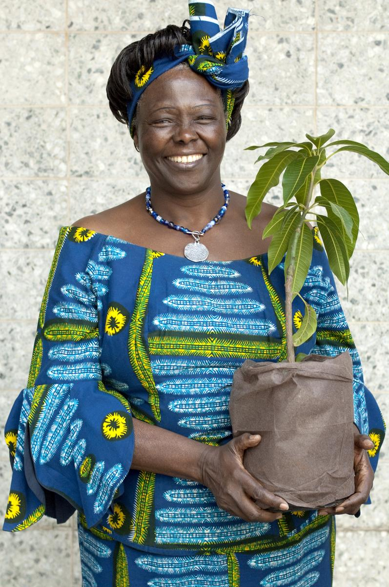

Inspirational Wall
A place to be inspire from women in tech and female environmentalists!
Many scholars and policymakers have noted that the fields of science, technology, engineering,
and mathematics have remained predominantly male with historically low participation among women
since their origins during the Age of Enlightenment. Overtime, the female to male ratio in STEM
had greatly increased and many women today are able to work in these environments. Currently the
percentage of PhD's in STEM fields in the U.S. earned by women is about 42%, whereas the percentage
of PhD's in all fields earned by women is about 52%.
Click on the images to learn more about these impactful females!
Elizabeth Blackwell (1821-1910)
A scientist that spent her life campaigning for the future of medicine
Grace Hopper (1906-1992)
A mathematician and computer programmer was nicknamed the Queen of Code because
she helped the Navy build one of its earliest computer

Katherine Johnson (1918-Present)
She was only 15 when she attended West Virginia State. Shen then joined NASA
to help the first man-in-space mission, whose calculations of orbital mechanics
as a NASA employee were critical to the success of the first and subsequent U.S.
crewed spaceflights

Wangari Maathai (1940-2011)
She was an environmentalist that founded The Green Belt Movement, which is an
organization to lower proverty and conserving the environment. She won a Noble
Peace Prize Laureate in 2004.

Vandana Shiva (1952-present) >
She is an environmental activist, author, and scientist. She is anti-globalization.
In 1993, she recieved the Right Livelihood Award.

Zakiya Harris (present)
As an environmental activist, she co-founded various organizations that helps people
to live in a greener space and empowers young people to be in environmental movements.
Greta Thunberg (2003-present)
A young activist that is determined to combat climate change. At age 8, she was in a
TED Talk about it. Later on, she made numerous speeches, including one at the
United Nations Climate Change Conference.
There are so many more women that have become inspirations to women everywhere and to remind them that they can do whatever they set their minds to